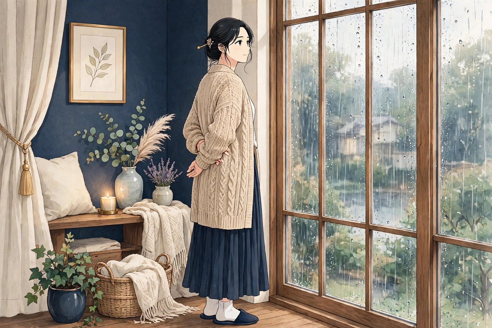

難波で雨の日に気になる腰の重さ｜低気圧の日の過ごし方とセルフケア、受診の目安

１．雨の日の腰の重さとは ― 低気圧の日に意識しやすい場面
「晴れの日は気にならないのに、雨が降る日になると腰が重く感じる」「天気が崩れる前から、腰まわりが張る感じがする」「雨の日は立ち上がるときや歩き始めに、腰が伸びにくい感じがする」——雨の日に意識されやすい腰の重さは、天気の変化と重なって語られることが多いお悩みの一つです。ここでいう腰の重さは、腰からお尻にかけての重だるさや張り、動かし始めのぎこちなさなどをまとめて表す日常的な言い方で、医学的な診断名ではありません。場面を問わない腰の重さについては関連コラム「難波で腰の重さが気になるときに」、季節の変わり目に感じる腰の重さについては「難波で季節の変わり目に気になる腰の重さ」でも整理していますが、この記事では「雨の日・低気圧の日という場面と、腰の重さとの関わり」に焦点を当てて整理します。難波周辺でも、傘をさして荷物を持つ通勤や、駅の乗り換えで濡れた路面を歩く場面など、雨の日ならではの腰まわりへの負担がかかる場面は日常の中にあります。感じ方や続く期間は人によってさまざまで、感じ方だけで、その背景を特定することはできません。この記事では、雨の日の腰の重さの一般的な解説、考えられる要因の例、低気圧の日に取り入れやすい過ごし方とセルフケア、そして先に医療機関へ相談したい目安を整理します。あくまで一般的な情報としてお読みください。
２．考えられる要因の整理
雨の日や低気圧の日に腰の重さを感じやすくなる背景には、次のような天気の変化や、その日の過ごし方が関係している場合があります。
- 気圧の変化と自律神経のゆらぎ：天気が崩れる前後は気圧が下がりやすく、体の調子を整える自律神経のバランスがゆらぎやすいと言われます。腰の重さも、そのような日の感じ方と一緒に語られることがあります。
- 冷えと湿度：雨の日は気温が下がったり、湿気や濡れた衣服で体が冷えやすく感じたりすることがあります。腰まわりが冷えると、重さを感じやすい方もいます。
- 室内で過ごす時間の長さと姿勢：雨の日は室内で座って過ごす時間が長くなりやすく、同じ姿勢が続くと腰まわりの負担が重なることがあります。
- 活動量の減少と歩き方の変化：外出や歩く機会が減る日は、腰を支える筋肉を使う場面も減りやすくなります。濡れた路面で歩幅が小さくなったり、滑らないよう慎重に歩いたりする日は、いつもと違う歩き方が腰まわりの感じ方と一緒に語られることもあります。
- 傘と荷物の持ち方：傘をさす側の手や肩に力が入りやすく、片側の手に荷物を持ち続ける日は、体の左右のバランスの偏りと一緒に腰の重さが語られることがあります。
- 眠りの質の変化：雨音や天気の崩れで眠りが浅いと感じたり、朝の目覚めがすっきりしないと感じたりする方もいて、その感じ方が腰の重さと一緒に語られることがあります。雨の日に体全体が重く感じる場合は、関連コラム「難波で雨の日に気になる体のだるさ」もあわせてご覧ください。
- 疲れの蓄積：平日の疲れが抜けにくいと感じる日と天気が崩れる日が重なると、普段より腰の重さを感じやすいこともあります。
これらは一例であり、当てはまる要因があっても、それがご自身の腰の重さの背景であると決めつけることはできません。
３．日常で取り入れられるセルフケア
どれも特別な道具はいりません。雨の日や低気圧の日でも取り入れやすいものから、無理のない範囲で続けやすいものを取り入れてみてください。腰まわりの筋肉（図1）と、背面の指標（図2）も参考にしてください。
- 腰まわりを冷やさない工夫をする：雨で濡れた衣服は早めに着替える、腹巻きや上着などで腰まわりを冷やさない服装を意識する方もいます。
- 入浴で体全体を温める：帰宅後の入浴で体全体を温める過ごし方を取り入れる方もいます。忙しい日はシャワーだけで済ませず、湯船につかる日を週の中でつくる工夫もあります。
- こまめに姿勢を変える：室内で座って過ごす時間が長い日こそ、1時間に一度は立ち上がって歩く、軽く伸びをするなど、同じ姿勢を続けない工夫を心がけます。
- 腰まわりをゆっくり動かす：仰向けで膝を立てて左右へ小さく倒す、骨盤まわりを小さく動かすなど、呼吸をしながら気持ちのよい範囲で動かします。腰を強く反らしたりひねったりは避け、痛みが強まる場合は中止してください。
- 傘と荷物の持ち方を見直す：荷物はリュックなどで両肩に分けたり、傘を持つ手を途中で持ち替えたりするなど、片側だけに負担が寄らない工夫をする方もいます。
- 室内で歩く時間をつくる：雨の日は、駅の構内や地下街を少し歩く、室内で家事の合間に体を動かすなど、日常の中で動く場面を少しずつつくる工夫をされる方もいます。体調に合わせて無理のない範囲で行ってください。
- 感じ方をメモする：腰の重さを感じた日の天気や気圧の変化、過ごし方や眠りの様子を簡単に記録しておくと、ご自身のパターンに気づきやすくなり、医療機関へ相談する際の材料にもなります。


４．受診の目安
次のような場合は、セルフケアやサロンでのケアより先に、整形外科などの医療機関への相談をご検討ください。
- 脚のしびれがある、または脚に力が入りにくい感じがある
- 排尿・排便がしづらい
- 発熱を伴う、または転倒・打撲などのケガのあとに痛みが出た
- 安静にしていても痛みが強く、日に日に強くなっていく
- 雨の日だけでなく晴れの日も痛みや重さが続き、数週間たっても続いている
- 夜、痛みで眠れない日が続いている
- 短期間で体重が大きく減った、食欲の低下が一緒に続いている
これらは一例です。腰の痛みや重さの背景には、骨や神経の不調など、早めの対応が必要な体の不調が関係する場合もあります。当てはまる場合や、少しでも気になる症状がある場合は、自己判断せず医療機関にご相談ください。
５．当店でのケアとサロンのご案内
ステラシリウス（難波）は、月〜土 17:00〜22:00／日曜 12:00〜22:00に営業する女性専用サロンです。カウンセリングで当日のお悩みをうかがい、腰だけでなく、お腹側や脚の巡りも含めて体の状態を見ながら、オイルマッサージと美容整体を組み合わせた90分 10,000円（税込）のコースをご用意しています。完全個室で、シャワー完備のため、施術の前後に汗やオイルを流してからお帰りいただけます。お仕事帰りや、難波でのお買い物のあとの夜の休息の時間としてご利用ください。なお、ご予約はLINE公式から受け付けています。また、当サロンはリラクゼーションを目的としたサロンで、医療行為は行いません。腰の重さへの治療を行うものではありませんので、「受診の目安」に当てはまる場合は、まず医療機関へご相談ください。